← Index · ← Previous · Next →
Authors: Abinash Kar, Ayan Patra, Aditi Sen De, Tamoghna Das
Type: theory · Category: quantum information and computing · PDF: https://arxiv.org/pdf/2605.27902v1
Analysis basis: full PDF text, analyzed in chunks
Topic relevance: correlated / nonlocal dissipation 2/5 · entanglement & information structure 2/5 · quantum measurements 2/5
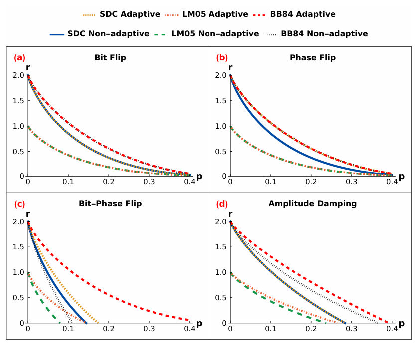
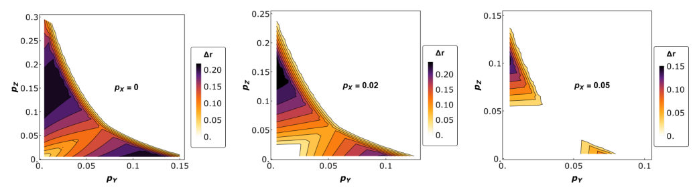
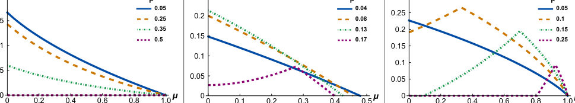
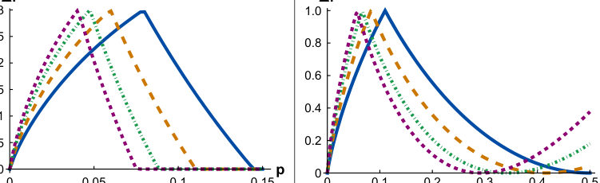
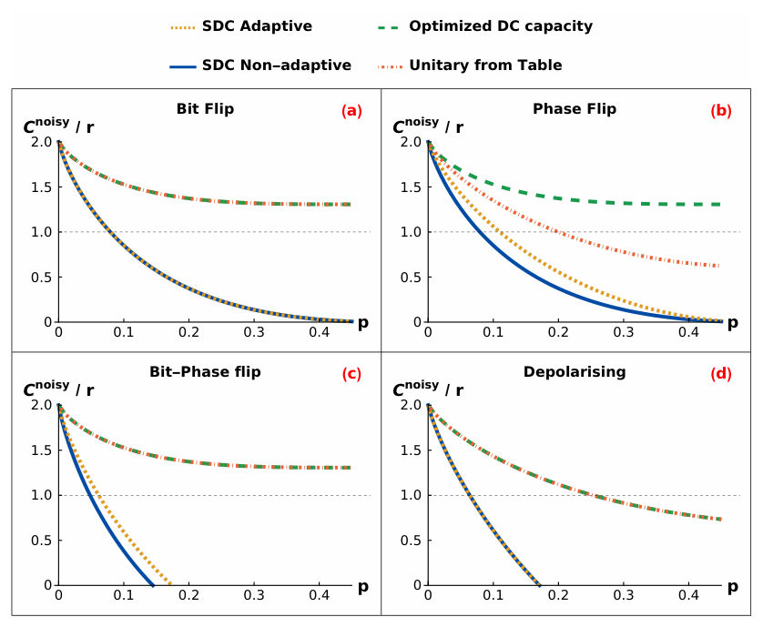
Summary. The paper introduces a framework for noise-adaptive two-way quantum key distribution where encoding and decoding are dynamically optimized to match channel noise. It demonstrates that this approach can increase secret key rates and noise tolerance for specific channel types like bit-phase flip and amplitude damping.
Why it may be interesting. This work is highly relevant to researchers in open quantum systems and quantum optics as it provides a framework for optimizing quantum communication protocols by leveraging the specific dynamics of the environment-induced noise.
Main problem. Existing two-way quantum key distribution (QKD) protocols use fixed encoding and decoding strategies that do not account for specific channel noise characteristics. The authors aim to develop and analyze noise-adaptive QKD (NAQKD) protocols that optimize these operations based on the noise model.
Main result. The study identifies specific noise channels, such as bit-phase flip and amplitude damping, where adaptive encoding and decoding significantly enhance secret key rates and noise thresholds. Conversely, it proves that for certain unital channels like depolarizing and bit-flip channels, adaptive strategies provide no advantage.
Method. The authors use entropic uncertainty relations and the Devetak-Winter bound to derive closed-form expressions for secret key rates. They optimize the parameters of SU(2) unitary operators for encoding and measurement bases to maximize these rates under collective attacks.
Model / system. A two-way quantum communication framework involving two honest parties (Alice and Bob) and an eavesdropper (Eve). The system involves a qubit traveling through forward and backward quantum channels subject to various noise models, including Pauli, amplitude damping, and non-Markovian environments.
Key observables. Secret key rate, critical noise threshold, and measurement probabilities.
Important parameters / regimes. Encoding unitaries (SU(2) parameters theta, chi, phi), noise strength (p), and the overlap parameter (gamma).
Assumptions / limitations. The analysis assumes the eavesdropper performs collective attacks and that the honest parties can accurately estimate the noise model of the channel.
Figures summary. Plots of secret key rate versus noise strength for different noise models (Bit Flip, Phase Flip, Bit-Phase Flip, and Amplitude Damping), demonstrating where adaptive strategies outperform non-adaptive ones.
Paper structure. The paper introduces the NAQKD framework, defines the mathematical optimization of encoding/decoding unitaries, provides security proofs using entropic uncertainty relations, compares performance across various noise models (Pauli, amplitude damping), and includes detailed mathematical appendices for protocol verification.
We introduce noise-adaptive quantum key distribution (QKD) protocols, in which the honest parties optimize the encoding (state preparation) and decoding (measurement basis) operations according to the noise models affecting the honest subsystems induced by an eavesdropper. This extends conventional QKD schemes that employ fixed encoding and decoding strategies independent of the noise characteristics of the communication channel. We investigate three representative protocols: entanglement-based secure dense coding (SDC), the entanglement-free Lucamarini and Mancini (LM05), and a two-way prepare-and-measure Bennett Brassard (BB84) protocols. Using entropic uncertainty relations, we derive the corresponding secret key rates for both adaptive and conventional non-adaptive scenarios under collective attacks. For independent but identical noise acting on the forward and backward transmission channels, as well as for correlated and non-Markovian environments, we identify classes of channels for which adaptive schemes yield enhanced secret key rates for the considered protocols. In contrast, we also determine Pauli channels, including depolarizing and bit flip channels, for which adaptive strategies provide no benefit. We further show that these optimal sets are generally non-unique and can differ substantially from the unitaries that maximize dense-coding capacity in the absence of security constraints. Our results establish noise-adaptive encoding and decoding as a powerful framework for improving secure communication over realistic noisy quantum channels.
Authors: Maxence Mayrand, Baptiste Royer
Type: theory · Category: quantum information and computing · PDF: https://arxiv.org/pdf/2605.28784v1
Analysis basis: full PDF text, analyzed in chunks
Topic relevance: entanglement & information structure 2/5 · quantum measurements 2/5
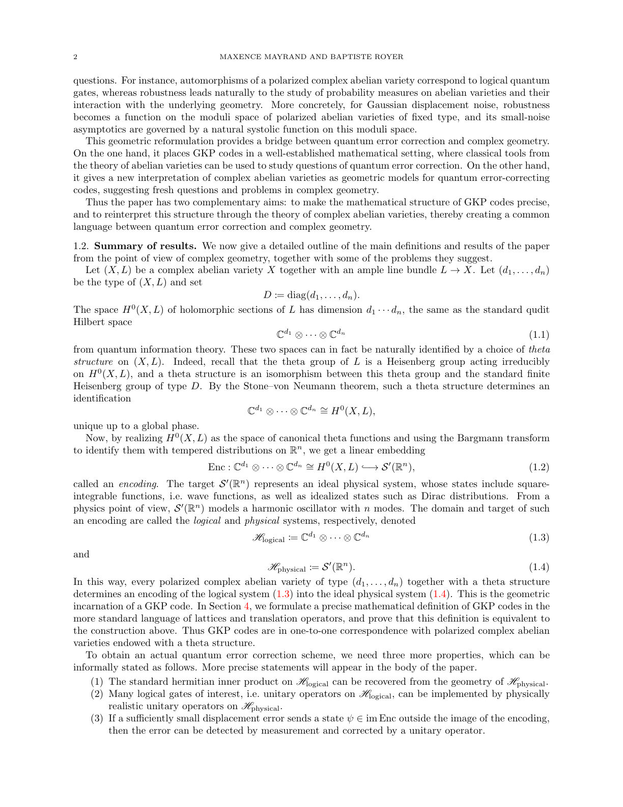
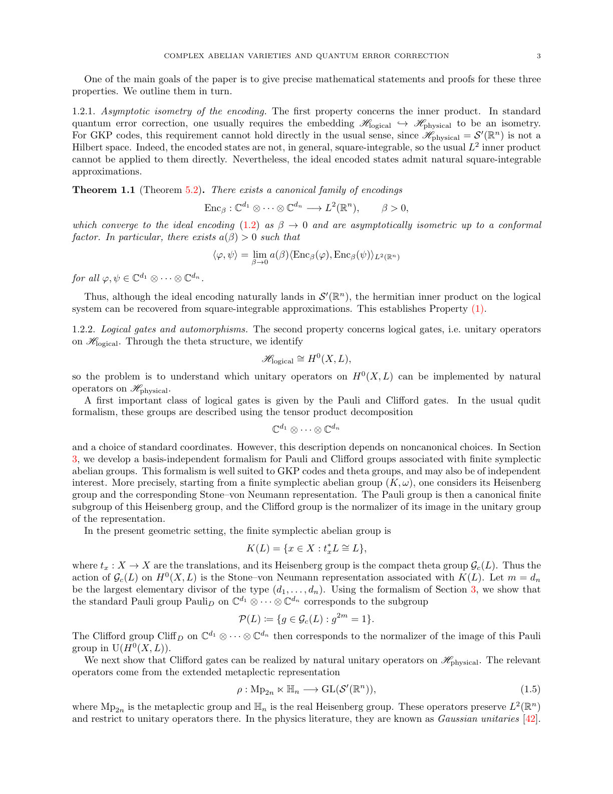
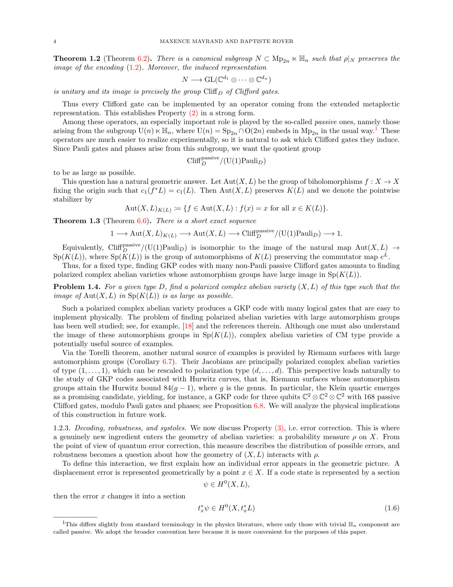
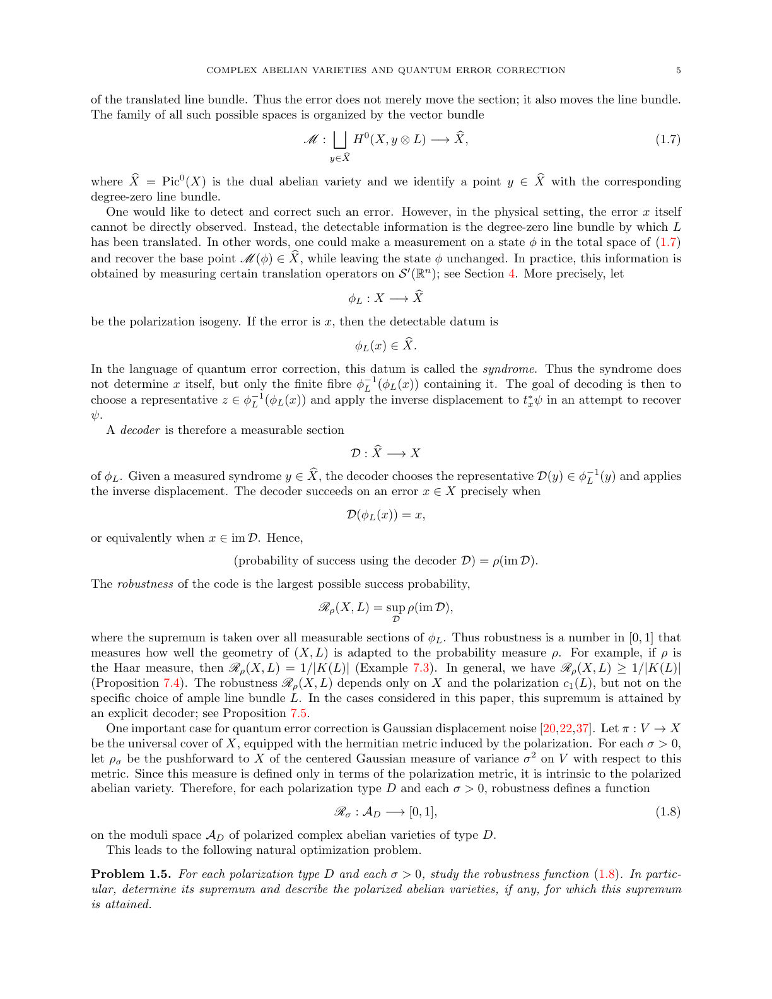
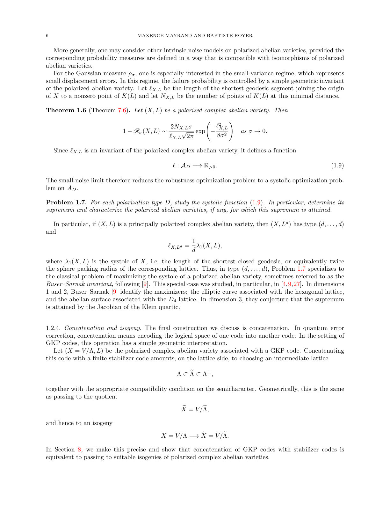
Summary. This paper provides a formal mathematical framework that maps GKP quantum error-correcting codes to the theory of polarized complex abelian varieties. It establishes that the robustness of these codes against Gaussian noise is determined by the geometric systolic invariants of the associated varieties. This connection allows for the translation of quantum error correction optimization problems into problems within the moduli space of abelian varieties.
Why it may be interesting. This provides a powerful new geometric toolkit for optimizing GKP codes, specifically relating error-correction performance to well-studied invariants in algebraic geometry, which is highly relevant for continuous-variable quantum computing.
Main problem. Establishing a rigorous mathematical foundation for Gottesman-Kitaev-Preskill (GKP) quantum error-correcting codes by linking them to the geometry of complex abelian varieties.
Main result. The authors prove a dictionary between GKP code structures and abelian varieties, showing that logical gates correspond to automorphisms and error robustness is governed by the systolic invariant of the underlying polarization.
Method. The paper utilizes the Bargmann transform to relate Schrödinger and Fock representations, applying the theory of Heisenberg groups, theta functions, and polarized complex abelian varieties.
Model / system. The system consists of continuous-variable GKP codes modeled via symplectically integral lattices in a multi-mode harmonic oscillator (represented by the space of tempered distributions or L2 functions).
Key observables. Logical Pauli gates, logical Clifford gates, decoding success probability (robustness), and the syndrome of displacement errors.
Important parameters / regimes. Small Gaussian displacement noise variance (sigma), the type of the lattice (d1, ..., dn), and the systolic invariant (shortest nontrivial displacement).
Assumptions / limitations. The analysis focuses on the small-noise limit (sigma to 0) and assumes Gaussian displacement noise and a symplectically integral lattice.
Paper structure. The paper begins by establishing a geometric dictionary between GKP codes and abelian varieties, moves to the representation theory of the Heisenberg group and the Bargmann transform, then analyzes the decoding problem and error dynamics in the small-noise limit, and concludes with optimization problems on the moduli space.
We study a class of quantum error-correcting codes through the geometry of complex abelian varieties. These codes, introduced by Gottesman--Kitaev--Preskill, are built from symplectically integral lattices and therefore naturally define polarized complex abelian varieties. We give a precise mathematical formulation of this relationship and extend it to a dictionary between the main structures of GKP code theory and classical objects in the theory of abelian varieties. For instance, under this dictionary, the finite-dimensional code space becomes the space of theta functions $H^0(X, L)$, logical Pauli gates arise from the theta group, passive logical Clifford gates correspond to automorphisms of the polarized abelian variety, and concatenation with stabilizer codes corresponds to isogeny. We also prove several key results that give precise mathematical formulations of statements about these codes that often appear in heuristic form in the physics literature. In particular, we prove that the encoding is asymptotically isometric, that every logical Clifford gate is realized by a Gaussian unitary, and that, for noise of small variance, the failure probability is governed to first order by the shortest nontrivial displacement in the kernel of the polarization isogeny, a systolic invariant of the underlying polarization. This leads naturally to optimization problems on the moduli space of polarized abelian varieties.
Authors: Quoc Hoan Tran, Koki Chinzei, Yasuhiro Endo, Hirotaka Oshima
Type: both · Category: quantum information and computing · PDF: https://arxiv.org/pdf/2605.28690v1
Analysis basis: full PDF text, analyzed in chunks
Topic relevance: entanglement & information structure 2/5 · methods for driven-dissipative 2/5
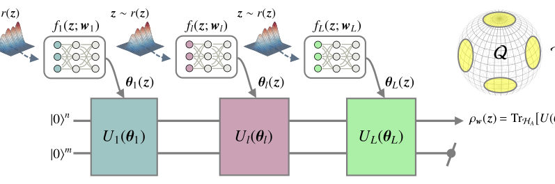
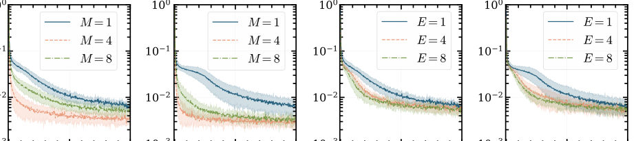
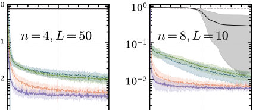
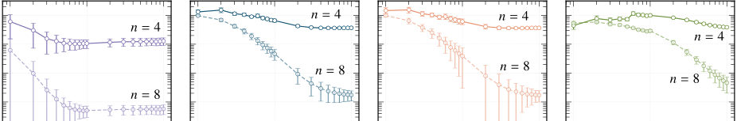
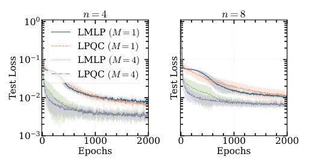
Summary. This paper introduces Latent-Conditioned Parameterized Quantum Circuits (LPQCs), a framework that uses classical neural networks to map latent variables to quantum circuit parameters. It proves that this approach can universally approximate any distribution of quantum states and shows that it effectively mitigates the vanishing gradient problem (barren plateaus). The method is successfully applied to generate complex molecular structures from the QM9 dataset.
Why it may be interesting. It provides a rigorous theoretical foundation for quantum generative modeling and introduces a practical method to bypass the barren plateau problem, which is a central bottleneck in variational quantum algorithms and quantum machine learning.
Main problem. The challenge of efficiently generating complex, multimodal distributions of quantum states (ensembles) and mitigating the barren plateau problem in parameterized quantum circuits (PQCs).
Main result. The authors prove that Latent-Conditioned Parameterized Quantum Circuits (LPQCs) are universal approximators for distributions over density operators and demonstrate that they significantly alleviate barren plateaus while outperforming quantum generative baselines on molecular datasets.
Method. A hybrid quantum-classical framework where a classical neural network maps a low-dimensional latent variable to the parameters of a PQC, utilizing a Mixture-of-Experts architecture and a 1-Wasserstein distance loss function.
Model / system. A hybrid generative model consisting of a classical neural network (the decoder) and a parameterized quantum circuit (the generator) acting on a system of n data qubits and m ancilla qubits.
Key observables. 1-Wasserstein distance, gradient norm (to measure barren plateaus), trace distance, and molecular metrics (validity, uniqueness, novelty).
Important parameters / regimes. Latent dimension (d), number of qubits (n), circuit depth (L), number of experts (E), and number of prior modes (M).
Assumptions / limitations. The latent space is compact, the prior density is positive and continuous, and the primitive gate set is dense in the unitary group.
Figures summary. Figure 1 shows the LPQC framework schematic; Figure 2 compares performance across different expert/mode configurations; Figure 3 uses PCA/t-SNE to visualize density matrix ensembles; Figure 4 shows test loss scaling; Figure 5 and 6 illustrate gradient norm decay/stability; Figure 7 compares Wasserstein loss; Figure 8 compares LPQC to IMPE; Figure 9 showcases generated novel molecules.
Paper structure. The paper introduces the LPQC framework, provides a mathematical proof of its universal approximation property, details architectural enhancements like Mixture-of-Experts, presents numerical experiments on synthetic ensembles, and demonstrates application to molecular generation using the QM9 dataset.
Many applications in quantum simulation, quantum chemistry, and quantum machine learning require not a single quantum state but an ensemble of states characterizing the heterogeneity of a target system. Preparing such ensembles state-by-state is prohibitive in both variational and fault-tolerant settings, motivating a generative-modeling approach. We introduce latent-conditioned parameterized quantum circuits (LPQCs), a hybrid quantum-classical framework in which classical neural networks map a latent variable sampled from a prior distribution to the parameters of a parameterized quantum circuit. We prove that LPQCs are universal approximators for probability measures over density operators in the $1$-Wasserstein distance, extending classical universal approximation theorems to the quantum-distribution setting. We additionally introduce a multimodal latent prior and a mixture-of-experts circuit architecture, and show that it empirically alleviates the barren plateau problem during optimization. Numerical experiments validate the framework on a synthetic multi-cluster ensemble of mixed quantum states and on a QM9-derived ensemble of 3-D molecular structures. In these tasks, LPQC outperforms recent quantum generative baselines while remaining competitive with typical classical baselines at substantially reduced output dimensionality. By leveraging classical expressivity in the latent space, LPQCs offer a tractable route to quantum generative modeling.
Authors: Boris Kiefer, Olivier Pfister
Type: theory · Category: quantum information and computing · PDF: https://arxiv.org/pdf/2605.27660v1
Analysis basis: full PDF text, analyzed in chunks
Topic relevance: entanglement & information structure 2/5 · quantum measurements 2/5
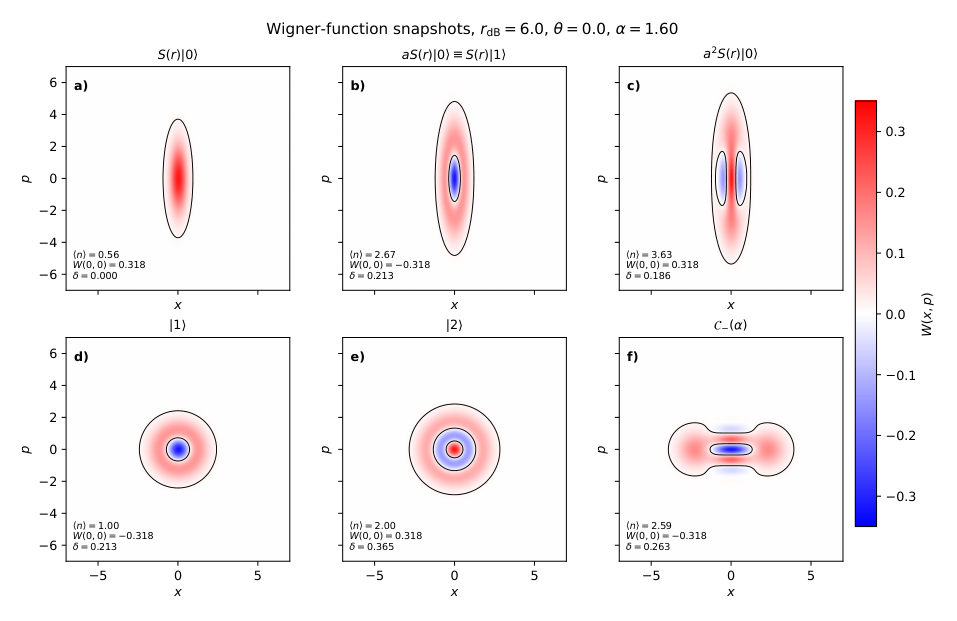
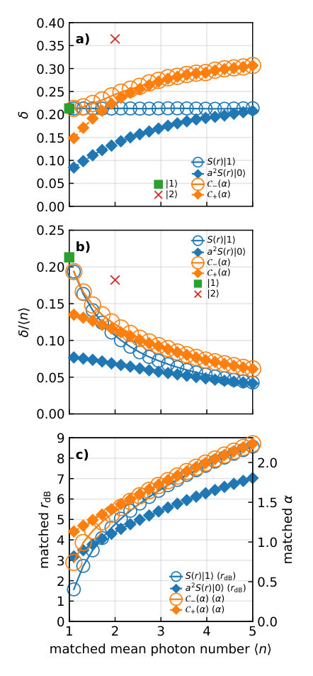
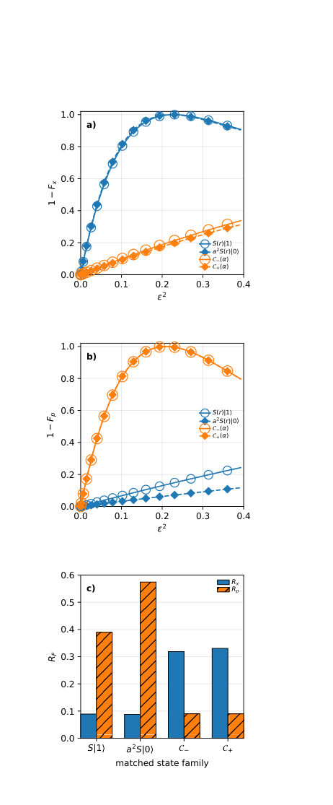
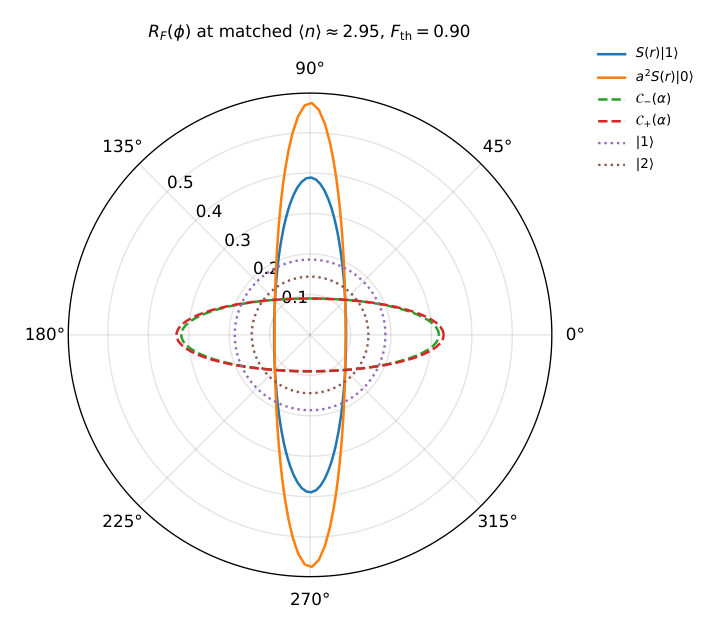
Summary. The paper compares different non-Gaussian quantum states to see how they perform under displacement noise. It finds that while cat states are better for overall non-Gaussianity, photon-conditioned squeezed states are better for protecting against noise in specific, known directions.
Why it may be interesting. This work is highly relevant to quantum optics and continuous-variable quantum information, as it provides a task-oriented framework for selecting non-Gaussian resources for noise-resilient quantum communication and sensing.
Main problem. The paper seeks to establish a common, energy-matched resource map to compare non-Gaussian state families (squeezed Fock, photon-subtracted, and cat states) based on their utility for displacement-noise mitigation and directional sensing.
Main result. While cat states provide superior scalar Wigner negativity, photon-conditioned squeezed states offer a tunable, anisotropic displacement-fidelity response, making them superior for tasks where the noise geometry is known.
Method. The authors use numerical simulations with a Fock-space cutoff of 80 and a uniform phase-space grid to benchmark states at a matched mean photon number.
Model / system. The study is set in the framework of continuous-variable (CV) quantum optics, utilizing single-mode bosonic operators and operations including squeezing, photon subtraction, and displacement.
Key observables. Integrated Wigner negativity, energy-normalized negativity, displacement-fidelity radii (Rx, Rp), and the anisotropy ratio.
Important parameters / regimes. Matched mean photon number (n), squeezing level (up to 12.5 dB), and fidelity threshold (Fth = 0.90).
Assumptions / limitations. The analysis assumes a weak-tap limit for photon subtraction and does not account for experimental imperfections like optical loss or finite detector efficiency.
Figures summary. Figure 1 shows Wigner functions of various states; Figure 3 displays matched-energy displacement-fidelity radii and anisotropy ratios; Figure 4 presents a polar plot of the angular displacement-fidelity radius.
Paper structure. The paper introduces the problem of resource comparison, defines the state families and metrics, presents the benchmarking results for scalar and directional metrics, and concludes with the implications for noise mitigation and sensing.
Squeezed Fock states, photon-subtracted squeezed states, and optical cat states are established non-Gaussian resources in continuous-variable quantum optics. Here we compare these known state families from a task-oriented perspective: matched mean photon number, scalar Wigner negativity, and directional displacement-fidelity response. Starting from squeezed vacuum, single-photon subtraction prepares a state proportional to \(S(r,θ)\ket{1}\), while two-photon subtraction prepares an even-parity squeezed Fock superposition rather than a pure \(S(r,θ)\ket{2}\). We benchmark photon-conditioned squeezed states against Fock and coherent-cat references using the integrated Wigner negativity \(δ\), the energy-normalized metric \(δ/\langle n\rangle\), and fidelity-threshold displacement radii \(R_F(φ)\). Cat benchmarks remain strong scalar Wigner-negativity resources, whereas photon-conditioned squeezed states provide an origin-centered alternative with tunable anisotropic displacement response. In particular, the two-photon-subtracted squeezed state shows favorable displacement-fidelity radii over selected quadrature directions at matched \(\langle n\rangle\). These results identify a regime relevant to homodyne-aligned continuous-variable control and anisotropic displacement-noise mitigation, with directional sensing as a natural dual application.
Authors: Bon A. Koo, Edward Ju
Type: theory · Category: statistical mechanics · PDF: https://arxiv.org/pdf/2605.27925v1
Analysis basis: full PDF text, analyzed in chunks
Topic relevance: non-equilibrium universality 2/5 · non-equilibrium dynamics 1/5
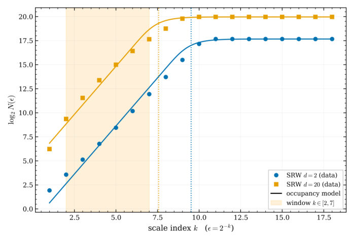
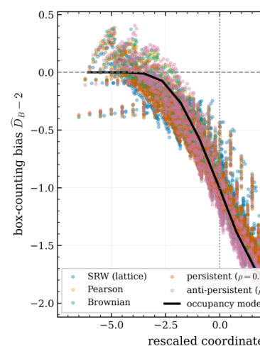
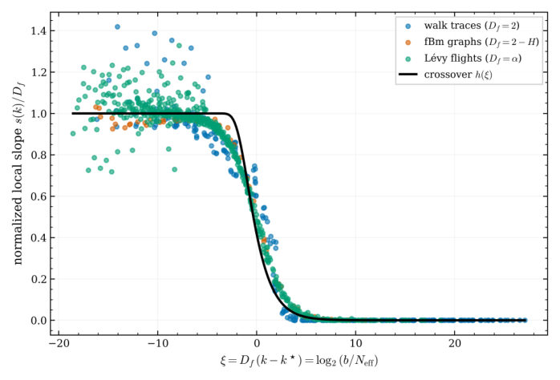
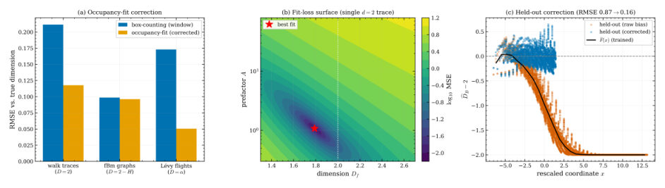
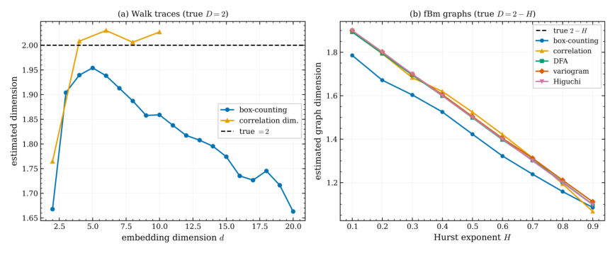
Summary. This paper addresses the systematic error in calculating fractal dimensions from finite datasets. By modeling the error as a finite-size scaling problem using a balls-in-boxes approach, the authors achieve a universal correction that works across different types of random processes.
Why it may be interesting. not directly relevant
Main problem. Estimating the fractal dimension from finite stochastic trajectories leads to a systematic bias in the box-counting exponent due to an occupancy crossover between resolved scales and finite sample points.
Main result. The authors demonstrate a universal scaling collapse for the box-counting bias and local slope across diverse processes (random walks, fBm, Levy flights) and provide an invertible occupancy model that corrects dimension estimates.
Method. A 'balls-in-boxes' occupancy model is used to treat the crossover as a finite-size scaling problem, validated through large-scale simulations and application to DNA walk data.
Model / system. The study analyzes various stochastic trajectories, including Simple Random Walks, fractional Brownian motion graphs, and Levy flights, using a mean-field balls-in-boxes occupancy framework.
Key observables. Fractal dimension (Df), box-count curve, normalized local slope, and windowed box-counting bias.
Important parameters / regimes. Saturation scale (k*), number of effective sampled sites (Neff), Hurst exponent (H), and the scaling variables (xi and x).
Assumptions / limitations. The model uses a mean-field approximation treating trajectory points as independently distributed into cells, which may fail for multifractal or strongly anisotropic systems.
Figures summary. Figure 1 shows the predicted box-count curve; Figure 2 shows the collapse of windowed bias against a scaling variable; Figure 3 shows the collapse of normalized local slopes; Figure 4 demonstrates the effectiveness of the bias correction on held-out models.
Paper structure. The paper introduces the finite-size bias problem, presents the balls-in-boxes occupancy model, demonstrates universal scaling collapse across different trajectory classes, validates the model with a bias correction, and applies the workflow to E. coli DNA walks.
Estimating a fractal dimension from a finite stochastic trajectory is a finite-size scaling problem: the apparent box-counting exponent is shaped by an occupancy crossover between the resolved range of scales and the finite number of sampled points, and need not equal the dimension of the limiting process. We model this crossover with a balls-in-boxes occupancy law, which predicts the box-count curve, the finite-size saturation scale, and a scaling function for the normalized local slope. Across random-walk traces, fractional Brownian graphs, and Levy flights, the normalized local slope collapses onto a single crossover curve, while the windowed box-counting bias collapses when the regression window is positioned relative to the saturation scale. Inverting the occupancy model gives a finite-size bias correction that reduces error on controlled stochastic trajectories and transfers across held-out model classes. Comparisons with correlation dimension, detrended fluctuation analysis, the variogram, and Higuchi's method show that the dominant bias is specific to point-sampled box-counting over finite scale windows, and that local-slope stability alone is not a reliable diagnostic. A DNA-walk example illustrates the workflow on measured data, and all figures, tables, and in-text numbers are regenerated from released single-seed code.
Authors: Jamal Slim, Saverio Monaco, Florian Rehm, Dirk Krücker, Kerstin Borras
Type: both · Category: quantum information and computing · PDF: https://arxiv.org/pdf/2605.27735v1
Analysis basis: full PDF text, analyzed in chunks
Topic relevance: QC/QI experiment 2/5
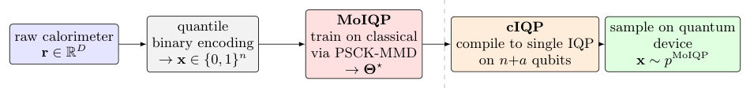
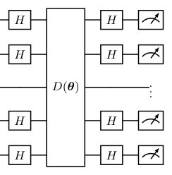
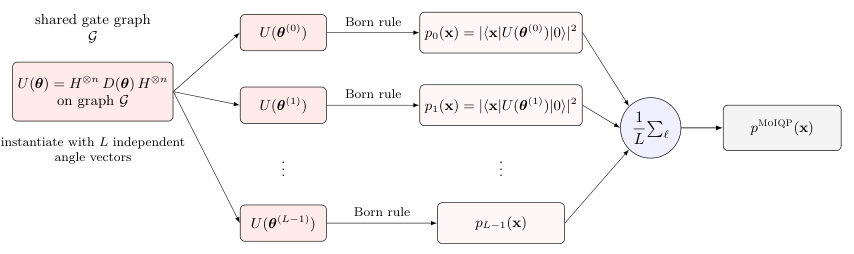
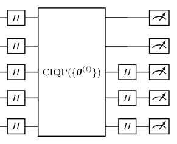
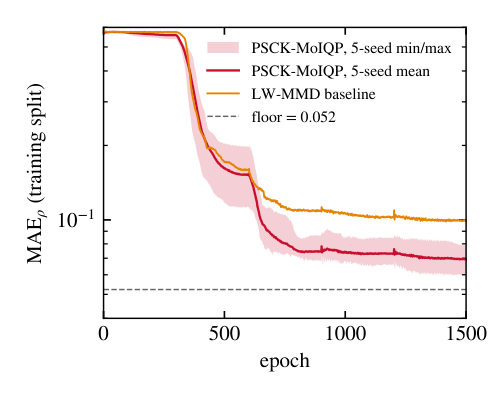
Summary. This paper presents a new quantum generative model designed to produce high-resolution calorimeter images for high-energy physics. By using a specialized correlation-sensitive loss function and a compilation technique, the authors achieve high-fidelity generation at 64 qubits without encountering barren plateaus.
Why it may be interesting. not directly relevant
Main problem. Developing a scalable quantum generative model for high-resolution (64-qubit) calorimeter image generation while overcoming the limitations of existing IQP models in capturing spatial correlations and avoiding barren plateaus.
Main result. The PSCK-MoIQP model significantly outperforms the Liu-Wang baseline in correlation reconstruction and demonstrates that the compiled cIQP circuit can be deployed on quantum hardware with sub-Monte-Carlo noise precision.
Method. A 'train-on-classical, deploy-on-quantum' workflow using a Pearson-Stabilized Correlation Kernel (PSCK) for training and a Walsh-Hadamard-based deferred-measurement compilation (cIQP) for deployment.
Model / system. A Mixture-of-IQP (MoIQP) architecture consisting of L independent IQP circuits sharing an Erdős-Rényi gate graph, which is compiled into a single larger IQP circuit (cIQP) using ancilla qubits.
Key observables. Pauli-Z words/correlators, Pearson correlation matrices, Mean Absolute Error of correlations (MAE_rho), and Z-marginals.
Important parameters / regimes. 64 qubits (n=64), 8 mixture components (L=8), 8 bits per feature (B=8), and an Erdős-Rényi gate graph with average degree 6.
Assumptions / limitations. The PSCK loss uses a Gauss-Newton linearization which is exact at the optimum; the compilation assumes the ability to implement deferred measurement via ancilla qubits.
Figures summary. Figures illustrate the MoIQP and cIQP architectures, compare Pearson correlation residuals between models, show per-feature distributional agreement, and plot training trajectories and gradient variance scaling.
Paper structure. The paper introduces the scientific challenge of HEP image simulation, describes the MoIQP and cIQP architectures, details the PSCK loss function and training algorithm, presents numerical results on 64-qubit scaling and correlation accuracy, and concludes with a verification of the compilation fidelity.
We train an instantaneous quantum polynomial-time (IQP) Born machine on real high-energy-physics calorimeter shower images at $64$ qubits and compile the trained model into a single sampling-hard IQP circuit for quantum deployment. The pipeline has three components: a Mixture-of-IQP (\moiqp{}) architecture, whose Walsh-diagonal MMD$^{2}$ loss is classically trainable by Van den Nest Fourier Monte Carlo; the Pearson-Stabilized Correlation Kernel (\psck{}), a positive-definite MMD kernel that biases descent toward correlation-sensitive directions through a data-evaluated Jacobian of the empirical Pearson matrix; and an exact deferred-measurement compilation of \moiqp{} into a single IQP circuit on $\nfeat + \lceil \log_2 \Lcomp \rceil$ qubits (\ciqp{}). Across five seeds at $\Lcomp = 8$, $1500$ epochs, the model reaches $\maerho = 0.069 \pm 0.008$ against a $0.052$ encoding-fidelity floor on the training split and $0.071 \pm 0.008$ on a held-out test split, versus a Liu--Wang baseline at $\maerho = 0.100$. The compiled \ciqp{} reproduces the \moiqp{} marginal to $0.591 \pm 0.012$ times the Monte Carlo noise floor.
Authors: Hamzeh Alavirad, Maryam Bahrami Zanjani
Type: experiment · Category: quantum information and computing · PDF: https://arxiv.org/pdf/2605.27670v1
Analysis basis: full PDF text, analyzed in chunks
Topic relevance: QC/QI experiment 2/5
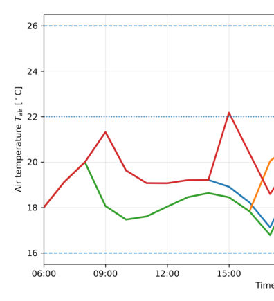
Summary. This paper benchmarks classical, hybrid, and direct quantum annealing solvers on a practical optimization task involving greenhouse climate control. It finds that while quantum-inspired and classical methods are highly reliable, current D-Wave hybrid and direct QPU workflows do not yet demonstrate quantum advantage for this structured control problem.
Why it may be interesting. not directly relevant
Main problem. Benchmarking the performance, reliability, and feasibility of various quantum and classical optimization workflows on a structured QUBO problem derived from greenhouse climate control.
Main result. Classical simulated annealing and path-integral simulated quantum annealing outperform the D-Wave Leap Hybrid BQM and direct QPU execution for the tested H=24 instance, with the QPU exact-hit rate dropping significantly as problem size increases.
Method. Comparison of exact enumeration, classical Simulated Annealing (SA), Path-Integral Simulated Quantum Annealing (PISA), D-Wave Leap Hybrid BQM, and direct D-Wave QPU execution.
Model / system. A greenhouse thermal model featuring air and canopy temperature dynamics, driven by solar radiation, outdoor temperature, and electricity tariffs, formulated as a Quadratic Unconstrained Binary Optimization (QUBO) problem for heater scheduling.
Key observables. Decoded objective value (growth, energy, and switching costs), solution feasibility (temperature bound violations), and exact-hit rate for QPU execution.
Important parameters / regimes. Time horizon H (up to 24 hours), temperature bounds (16-26 degrees C), and electricity tariff structures.
Assumptions / limitations. The model assumes instantaneous heater effects (no lag) and uses a simplified quadratic proxy for plant growth rather than a fully calibrated agronomic model.
Figures summary. The figures include an overview of the greenhouse simulator (thermal trajectories, solar radiation, and tariffs), body-temperature trajectories for feasible solutions, and cumulative growth proxy plots.
Paper structure. The paper introduces a greenhouse-inspired control problem, formulates it as a QUBO, describes the various classical and quantum solvers used, presents a benchmark comparison of solution quality and feasibility, and discusses the limitations of current quantum annealing workflows.
We benchmark current annealing-based optimization workflows on a greenhouse-inspired quadratic unconstrained binary optimization problem for binary heater scheduling, where the horizon H denotes the number of hourly control decisions. For the main one-day instance (H=24), all solver outputs are decoded back into heater schedules and evaluated in the original greenhouse simulator using the same physical objective and feasibility criterion. Classical simulated annealing and path-integral simulated quantum annealing produce feasible near-optimal solutions in all repetitions, with best objectives close to the exact optimum. In contrast, the tested D-Wave Leap Hybrid BQM workflow is less reliable and does not outperform the classical baselines under 15--60~s requested time limits. Direct D-Wave QPU execution on reduced instances remains feasible in all runs and recovers the exact optimum for H=10 and H=12, but the exact-hit rate drops from 5/10 to 2/10 and then to 0/10 at H=14, with substantially higher variance than the classical baselines. The results do not indicate quantum advantage, but provide a reproducible, physically decoded benchmark that exposes the current strengths and limitations of classical, hybrid, and direct quantum annealing workflows on structured control QUBOs.
Authors: Mihir Date, Jan Berges, Enrico Da Como, Marcin Mucha-Kruczyński, Alex Louat, Gabriele Domaine, Niels B. M. Schröter, Malte Rösner, Matthew D. Watson
Type: both · Category: strongly correlated electrons · PDF: https://arxiv.org/pdf/2605.28259v1
Analysis basis: full PDF text, analyzed in chunks
Topic relevance: Frenkel-Kontorova 2/5
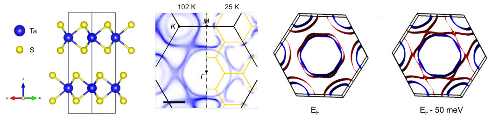
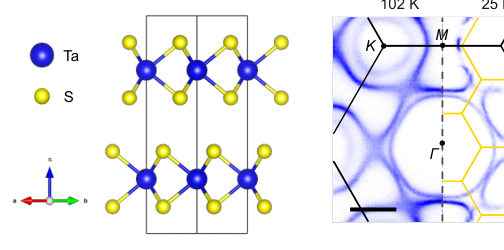
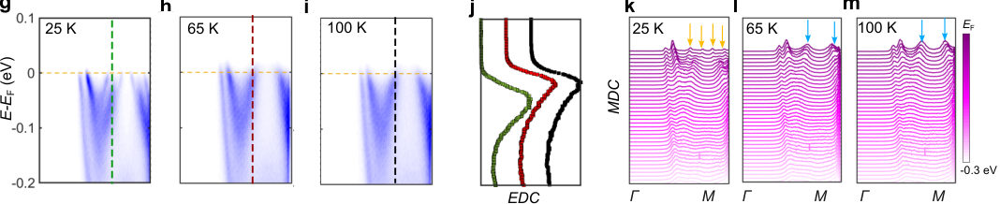
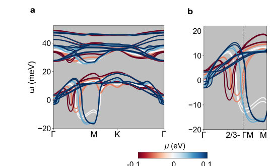
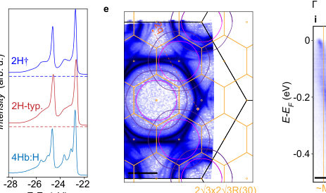
Summary. This paper investigates how tuning the electron density and lattice structure in TaS2 can engineer different charge density wave phases. It reveals a hidden lock-in transition in standard TaS2 and identifies a new, novel CDW order in self-intercalated samples. This work provides a roadmap for controlling electronic instabilities in layered materials via chemical doping.
Why it may be interesting. not directly relevant
Main problem. The study aims to characterize the change in charge density wave (CDW) ordering in 2H-TaS2 and its self-intercalated variant, specifically investigating how band filling and interlayer spacing control the CDW wavevectors and the nature of the incommensurate-to-commensurate transition.
Main result. The authors identify a two-step transition in conventional 2H-TaS2 involving a lock-in transition below 65 K and discover a novel 2√3 x 2√3R(30°) CDW phase in electron-doped 2H†-Ta1+δS2.
Method. The study combines micro-focused angle-resolved photoemission spectroscopy (μ-ARPES) with ab initio calculations using Density Functional Theory (DFT) and the Electron-Phonon Wannier (EPW) package to model phonon instabilities and band filling effects.
Model / system. The physical system is the transition metal dichalcogenide 2H-TaS2 and its self-intercalated version 2H†-Ta1+δS2, characterized by quasi-2D layers and electronic instabilities driven by electron-phonon coupling.
Key observables. Spectral gaps, backfolded bands (triangular pockets), Fermi surface topology (dogbone and K-barrel pockets), and phonon dispersion/self-energy.
Important parameters / regimes. Temperature (25 K to 100 K), band filling (electron vs. hole doping), and interlayer spacing (c-axis elongation).
Assumptions / limitations. The calculations assume the validity of the electron-phonon coupling model as implemented in the EPW package and use fixed Ta positions with relaxed S z-coordinates.
Figures summary. The figures likely illustrate ARPES spectra showing spectral gaps and backfolded features, Fermi surface reconstructions, and theoretical phonon dispersion curves showing instabilities at specific q-vectors.
Paper structure. The paper introduces the problem of CDW ordering, presents experimental ARPES evidence for the lock-in transition in conventional TaS2, describes the discovery of the new CDW phase in the self-intercalated phase, and concludes with ab initio theoretical support for the role of doping and lattice spacing.
We investigate electronic instabilities in 2H-TaS\textsubscript{2} and a self-intercalated variant, 2H$^\dagger$-Ta\textsubscript{1+$δ$}S\textsubscript{2}. In conventional samples, which we determine to be slightly hole-doped, spectral gaps and backfolded features are found as fingerprints of the $3\times3$ charge density wave (CDW). Notably, the backfolded features emerge only at a temperatures below $T\approx$~65~K, substantially lower than the established CDW temperature of 78~K, suggesting an incommensurate-commensurate lock-in transition analogous to the phenomenology of the 2H-TaSe\textsubscript{2}. In contrast, the self-intercalated 2H$^\dagger$ sample exhibits substantial electron doping and signatures of a novel \tworootthree CDW. Using \textit{ab initio} calculations of the phonon spectrum, we demonstrate that the \threebythree instability ($\mathbf{q}=\sfrac{2}{3}\mathbf{ΓM}$) is highly sensitive to band filling. Furthermore, with increased interlayer spacing, a competing soft phonon mode emerges near $\mathbf{q}=\sfrac{1}{2}\mathbf{ΓK}$, corresponding to the superstructure observed in the 2H$^\dagger$ phase, although in our calculations this instability arises under hole doping rather than the electron doping inferred experimentally. These results establish band filling and interlayer spacing as key control parameters for CDW ordering vectors in 2H-TaS\textsubscript{2}, and highlight a route to engineering electronic instabilities in a prototypical layered material.
Authors: Innocenzo Fulginiti, Yanbin Chen, Christian B. Mendl, Helmut Seidl
Type: theory · Category: quantum information and computing · PDF: https://arxiv.org/pdf/2605.28439v1
Analysis basis: full PDF text, analyzed in chunks
Topic relevance: quantum measurements 2/5
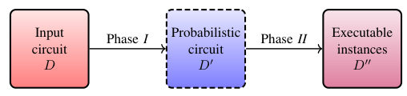
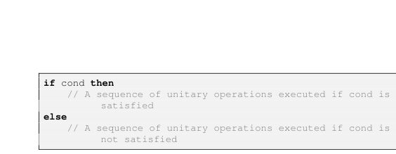
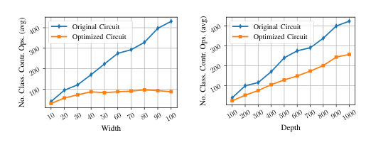
Summary. This paper presents a new compilation framework designed to reduce the runtime overhead of dynamic quantum circuits. By using symbolic execution at compile-time, the method simplifies or removes classically controlled operations, effectively shifting the computational burden from the quantum hardware's controller to the classical compiler.
Why it may be interesting. not directly relevant
Main problem. Dynamic quantum circuits introduce significant hardware latency and overhead due to the feedback loop between mid-circuit measurements and classical controllers. Existing compile-time optimizations fail to simplify the classically controlled operations that depend on these measurement outcomes.
Main result. The authors developed a two-phase compilation framework that achieves approximately a 50% reduction in classical feedforward in random circuits, with reductions up to 80% for larger circuit widths.
Method. A two-phase optimization scheme: Phase I uses symbolic execution and Classical Constant Propagation (CCP) to rewrite dynamic circuits into a probabilistic representation; Phase II samples this representation to generate executable circuit instances.
Model / system. Dynamic quantum circuits consisting of a quantum register of n qubits and a classical register of m bits, involving mid-circuit measurements, resets, and classically controlled operations.
Key observables. Number of classically controlled operations, reduction in classical feedforward, and circuit width/depth scaling.
Important parameters / regimes. Circuit width (10 to 100 qubits) and circuit depth (100 to 1000).
Assumptions / limitations. The 'then' and 'else' branches of controlled operations are restricted to unitary sequences; the framework uses a conservative threshold for entanglement tracking to maintain polynomial complexity.
Figures summary. Figure 1 shows the two-phase compilation overview; Figure 2 illustrates the structure of classically controlled operations; Figure 3 shows the scaling of operation reduction relative to circuit width and depth.
Paper structure. The paper introduces the problem of latency in dynamic circuits, proposes a two-phase framework (Phase I: Dynamic to Probabilistic; Phase II: Probabilistic to Executable), details the algorithms for classical and quantum constant propagation, provides a mathematical proof of semantic preservation, and evaluates the framework on random circuits and GHZ state preparation.
Dynamic circuits use real-time outcomes of mid-circuit measurements, processed by a classical controller, to adapt subsequent operations during circuit execution. This additional flexibility over static circuits comes at a price. Mid-circuit measurements are typically slower and noisier than unitary gates. Furthermore, classical feedforward requires exchanging information between the quantum processor (QPU) and the classical controller, introducing latency that erodes the practical performance of dynamic circuits. We propose a compile-time optimization framework that reduces the use of classical controls in dynamic circuits while preserving their semantics. At its core, the framework uses a static analysis that symbolically executes the circuit by propagating classical information alongside the quantum state. By combining this classical-quantum information with the Probabilistic Circuit Model extended with probabilistic controls that emulate classical feedforward, we obtain an intermediate probabilistic representation of the dynamic circuit. In this representation, mid-circuit measurements and classically controlled operations can be removed or rewritten as purely unitary operations and probabilistic components. Compared to existing compile-time optimizations that target only mid-circuit measurements, our method applies to a broader class of dynamic circuits expressible in modern quantum programming languages. We evaluated our framework on randomly generated dynamic circuits, achieving about 50% classical feedforward reduction and even higher reductions in favorable settings.
Authors: Edilberto O. Silva
Type: theory · Category: quantum gases · PDF: https://arxiv.org/pdf/2605.27863v1
Analysis basis: full PDF text, analyzed in chunks
Topic relevance: non-equilibrium dynamics 2/5
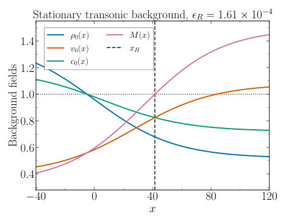
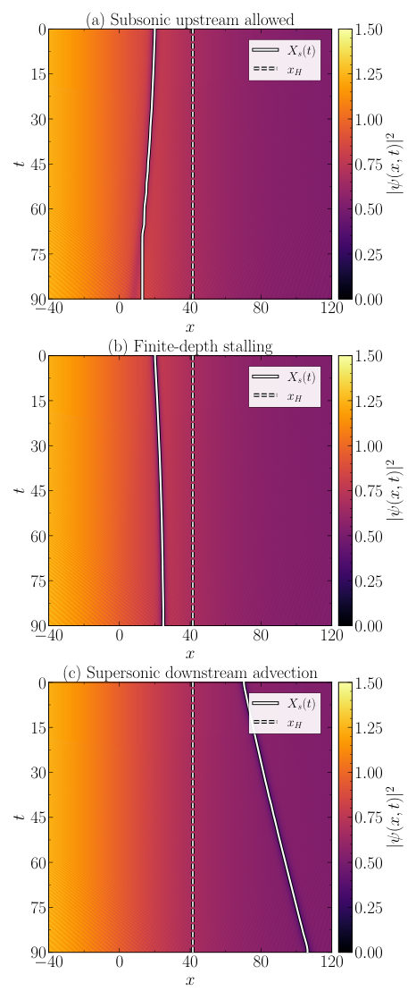
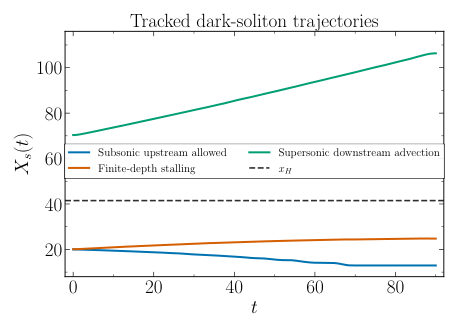
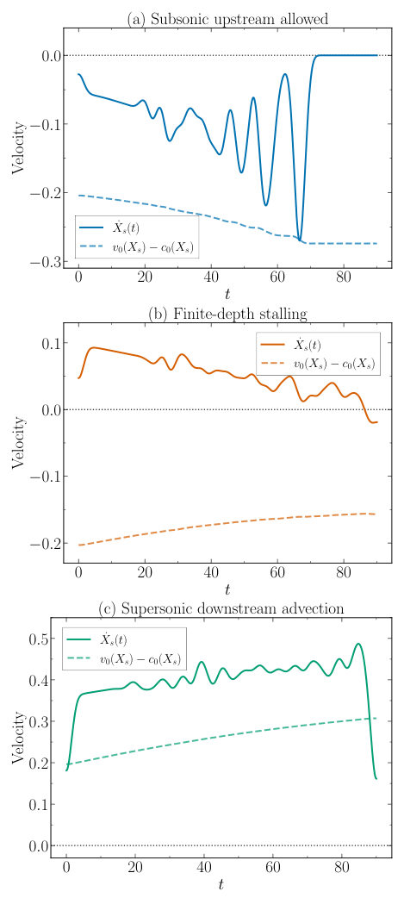
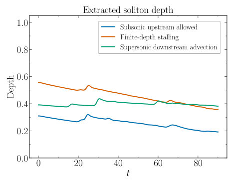
Summary. This paper demonstrates that the acoustic horizon in a transonic Bose-Einstein condensate acts as a barrier that prevents dark solitons from maintaining upstream motion. In the supersonic region, the background flow is too fast for the soliton branch to overcome, forcing the defects to be advected downstream. This establishes the sonic point as a fundamental limit for the existence of the dark-soliton branch.
Why it may be interesting. It provides a nonlinear analogue to the acoustic horizon effect seen in phonons, demonstrating how nonlinear excitations like solitons are subject to a 'nonlinear speed-limit' in transonic flows, which is relevant for understanding defect dynamics in non-equilibrium many-body systems.
Main problem. Investigating whether a dark-soliton branch can sustain upstream motion in a stationary transonic Bose-Einstein condensate flow and determining if the acoustic horizon acts as a branch-blocking mechanism.
Main result. The study finds that the sonic point acts as a branch-existence constraint; in the supersonic region, the background flow exceeds the maximum possible upstream velocity of the soliton, leading to downstream advection rather than upstream propagation.
Method. Numerical evolution of the 1D defocusing Gross-Pitaevskii equation in an open, nonperiodic domain using a fourth-order Runge-Kutta scheme and centered finite differences.
Model / system. A quasi-one-dimensional, repulsive, dilute Bose-Einstein Condensate (BEC) in a stationary transonic flow described by the defocusing Gross-Pitaevskii equation.
Key observables. Soliton velocity (laboratory and fluid frames), density depletion (contrast), phase jump, soliton width, and Mach number.
Important parameters / regimes. Mach number (M), local sound speed (c0), dimensionless upstream velocity parameter (alpha), and the adiabatic parameter (ratio of soliton width to background length scale).
Assumptions / limitations. The result is a branch-existence constraint rather than a rigorous lower bound on all arbitrary density minima; the local-density approximation (LDA) may weaken as the soliton approaches the sonic limit.
Figures summary. Figure 1 shows the stationary transonic background profiles; Figure 2 displays density evolutions for different flow regimes; Figures 6-8 show branch-consistency diagnostics, alpha scans, and numerical convergence; Figures 9-10 show soliton trajectories and the lack of an upstream branch in the supersonic regime; Figure 12 shows phase-jump diagnostics.
Paper structure. The paper introduces the problem of nonlinear branch blocking, describes the transonic BEC model and numerical methods, presents results across subsonic and supersonic regimes, validates the soliton-like nature of the defects via phase-jump and density diagnostics, and concludes with the implications of the branch-existence constraint.
Acoustic horizons in Bose--Einstein condensates are usually characterized through long-wavelength Bogoliubov phonons. We study a nonlinear counterpart: whether a one-dimensional dark-soliton branch can sustain upstream laboratory motion in a stationary transonic flow. The mechanism is local at leading order. A regular dark soliton has a bounded fluid-frame velocity, limited by the local sound speed; therefore, in the supersonic region, the background flow exceeds the largest upstream velocity available to the soliton branch. The sonic point is thus the upstream edge of the local dark-soliton branch, rather than a hard wall or a soliton geodesic surface. We construct stationary transonic Gross--Pitaevskii backgrounds and evolve the full order parameter in an open, nonperiodic domain. The simulations show upstream propagation on the subsonic side, finite-depth stalling on the subsonic side, and downstream advection for defects initialized in the supersonic region with upstream velocity relative to the fluid. Convergence, branch-consistency, local-density, phase-jump, and a dense scan of dimensionless upstream attempts support the soliton-like interpretation. The result is a branch-existence constraint, not a rigorous lower bound on arbitrary density minima of the Gross--Pitaevskii field.
Authors: R. B. do Carmo, T. Araújo Lima
Type: theory · Category: disordered systems and neural networks · PDF: https://arxiv.org/pdf/2605.27693v1
Analysis basis: full PDF text, analyzed in chunks
Topic relevance: scars & prethermalization 2/5
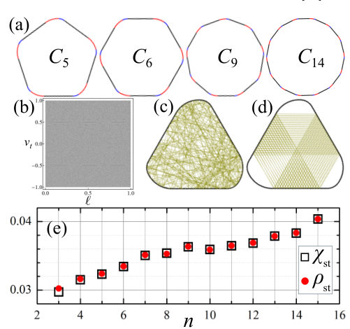
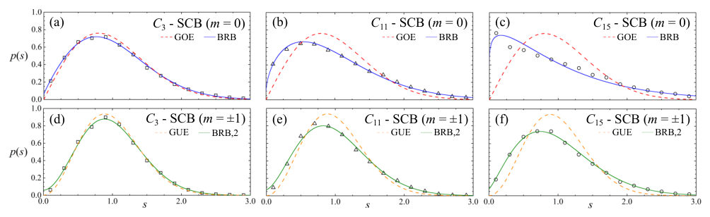
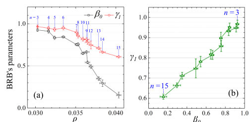
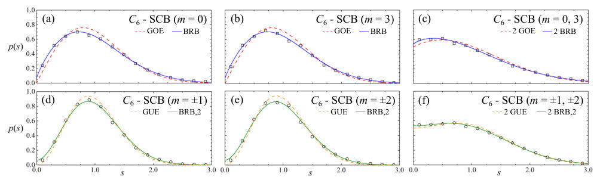
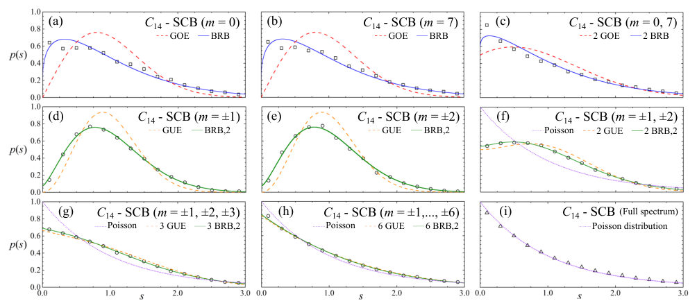
Summary. This paper explores how classical phase space structures, specifically 'sticky' regions, influence the quantum energy spectrum of symmetric chaotic billiards. It demonstrates that these classical features drive deviations from standard random matrix predictions and create correlations between different symmetry-resolved energy subspaces.
Why it may be interesting. not directly relevant
Main problem. Investigating how classical 'stickiness' in phase space causes non-universal deviations from standard Random Matrix Theory (GOE/GUE) in the energy-level statistics of quantum chaotic billiards with n-fold rotational symmetry.
Main result. The study finds that increasing the stickiness fraction leads to larger deviations from RMT, and reveals a strong positive correlation between localization parameters in different symmetry-resolved subspaces.
Method. Numerical analysis of energy eigenvalues using the boundary method (solving the Helmholtz equation) combined with classical box-counting to determine the stickiness fraction and statistical fitting using BRB and BRB,2 distributions.
Model / system. A family of $C_n$-symmetrical chaotic billiards (C_n-SCB) based on the LSS model, where regular polygons have vertices replaced by circular arcs, creating classically ergodic dynamics with sticky regions.
Key observables. Nearest-neighbor level spacing distribution p(s), stickiness fraction (rho_st), and localization parameters (beta and gamma).
Important parameters / regimes. Symmetry parameter n, angular momentum eigenvalue m, and the volume fraction of sticky regions rho_st.
Assumptions / limitations. The system is assumed to be classically ergodic but with specific regions of phase space being visited more frequently due to marginally unstable periodic orbits.
Figures summary. Figure 1 shows the billiard geometries and phase space; Figure 2 displays spacing distributions for different n; Figure 3 shows the decrease of localization parameters; Figure 5 illustrates the transition from symmetry-resolved statistics to Poisson statistics through superposition.
Paper structure. The paper introduces the C_n-SCB model, describes the classical stickiness and quantum spectral analysis, presents results on deviations from RMT, explores correlations between symmetry subspaces, and concludes with the effects of spectral superposition.
In this work, we study a family of fully chaotic billiards that exhibits only rotational symmetries, whose geometry is based on the $C_3$ symmetry system proposed by Leyvraz, Schmit, and Seligman~(LSS) in 1996. Quantum spectral analyses are performed on billiards with symmetry $C_n$~(the billiard repeats itself under rotations of $2π/n$), where $n$ is the symmetry parameter. In these systems, there are subspaces of singlets~(invariant under time reversal) and doublets~(not invariant under time reversal). For the LSS billiard, it has been established both numerically and experimentally that the corresponding subspectra follow the Gaussian Orthogonal Ensemble~(GOE) statistics for singlets and the Gaussian Unitary Ensemble~(GUE) statistics for doublets. From a classical perspective, the shapes of these billiards allow certain subregions of phase space to be visited more frequently by chaotic trajectories, a phenomenon known as stickiness. We investigate the relationship between the fraction of sticky regions in classical phase space and the deviations of the energy subspectra from GOE and GUE statistics. Our results suggest the existence of correlations between the energy distributions associated with different symmetry subspaces. In addition, we discuss aspects related to the superposition of the different energy subspectra.
Authors: Lev Sakhnovich
Type: theory · Category: other · PDF: https://arxiv.org/pdf/2605.28528v1
Analysis basis: full PDF text, analyzed in chunks
Topic relevance: Keldysh / 2PI / non-Gaussian methods 2/5
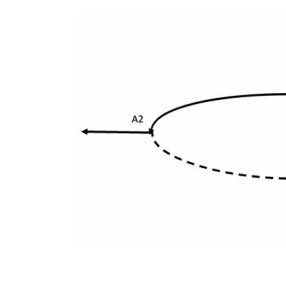
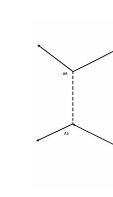
Summary. This paper provides a mathematical framework for relating the internal, unobservable components of Feynman diagrams to their external, observable counterparts. It establishes a formal link between the topological properties of these diagrams and the convergence properties of the associated Feynman integrals.
Why it may be interesting. not directly relevant
Main problem. The paper addresses the formulation and solution of the direct and inverse problems for Feynman diagrams, specifically focusing on recovering internal virtual particle data from external observable data and vice versa.
Main result. The author proves that complete direct data can be recovered from inverse data and vice versa, and identifies exactly four specific regimes of divergence for the Feynman integrals.
Method. The study employs graph theory (Betti numbers, cyclomatic numbers) and topological characterization to map the relationship between Feynman diagrams and classical colored graphs.
Model / system. The system is the electron-photon interaction within the framework of Quantum Electrodynamics (QED), modeled as an m-fold integral of a rational matrix function over a 4m-fold sphere.
Key observables. External electron lines (Ne) and external photon lines (Np).
Important parameters / regimes. Number of vertices (n), number of internal electron/photon lines (Fe, Fp), number of loops (m), and the counter number (K) which determines convergence.
Assumptions / limitations. The Feynman diagrams are assumed to be irreducible, and the model assumes a specific vertex structure where two electron lines and one photon line meet.
Paper structure. The paper begins by defining the direct and inverse problems, introduces the mathematical model for electron-photon interaction, applies graph-theoretic methods to characterize the diagrams, and concludes with the classification of divergence regimes and data recovery proofs.
In this note, we formulate the notions of the direct and inverse problems and contact points for the Feynman diagrams. For the electron-photon interaction case, the solutions of these direct and inverse problems are presented. The interrelations between Feynman diagrams and the classical colored graphs are discussed.
Authors: Felix Rupprecht, Sabine Wölk
Type: theory · Category: quantum information and computing · PDF: https://arxiv.org/pdf/2605.28489v1
Analysis basis: full PDF text, analyzed in chunks
Topic relevance: entanglement & information structure 2/5
Summary. The authors present a more efficient way to prepare Matrix Product States on quantum computers by exploiting the block-sparse structure created by physical symmetries. By transforming these sparse matrices into block-diagonal form, they significantly reduce the number of required quantum gates. This leads to a massive reduction in computational resources for simulating complex molecular systems.
Why it may be interesting. This work provides a significant algorithmic optimization for the interface between classical tensor network methods (DMRG) and fault-tolerant quantum computing, which is crucial for future quantum chemistry simulations.
Main problem. The high computational cost of preparing Matrix Product States (MPS) on fault-tolerant quantum computers, specifically regarding the large number of Toffoli gates and qubits required.
Main result. Achieved a 10-30x reduction in Toffoli gate costs by exploiting block-sparsity from U(1) symmetries and a sqrt(2) reduction in cost for real-valued unitary synthesis.
Method. An ancilla-assisted linear-depth approach using row and column permutations to transform block-sparse matrices into block-diagonal form, implemented via modified unitary synthesis and Givens rotations.
Model / system. Fermionic many-body systems with U(1) symmetries (particle number and spin projection conservation), including molecular systems like P450 enzymes and Iron-Sulfur clusters.
Key observables. Toffoli gate count, qubit count, and state overlap (fidelity) with the target MPS.
Important parameters / regimes. Bond dimension (chi), site dimension (D), and the trade-off parameter (Lambda) controlling the ancilla vs. Toffoli gate balance.
Assumptions / limitations. Assumes the MPS is in right-canonical form, all non-trivial bond dimensions are equal, and that the system possesses global Abelian symmetries.
Figures summary. Figure 1 shows the MPS preparation circuit; Figure 2 depicts the quantum circuit for implementing rotation layers; Figure 3 illustrates the transformation of block-sparse unitaries into block-diagonal form; Figure 4 shows the implementation of permutations using QROAM.
Paper structure. The paper introduces the problem of MPS preparation, details the symmetry-based block-diagonalization method, describes the modified unitary synthesis for real-valued unitaries, provides resource estimation via Qualtran, and concludes with numerical benchmarks on molecular systems.
Matrix product states (MPS) serve as a key tool for studying quantum systems from chemistry and condensed-matter physics, making their preparation on quantum computers an important task in interfacing classical and quantum simulation. Many systems of interest have $U(1)$-symmetries induced by particle number and spin projection conservation, allowing to restrict the MPS tensors to be of block-sparse form, a property widely used in the implementation of classical algorithms such as the density matrix renormalization group. We reduce the cost of fault-tolerantly preparing block-sparse MPS within the standard ancilla-assisted linear-depth approach by implementing row and column permutations that transform the block-sparse matrices into block-diagonal form. These block-diagonal unitaries are then implemented via unitary synthesis, with the cost being determined by the size of the largest block. In this context, we modify the unitary synthesis approach of Berry et al. in order to reduce the Toffoli cost for real-valued unitaries by a factor of $\sqrt{2}$. In numerical benchmarks, we achieve Toffoli cost improvement factors of $10 - 30$ compared to the state-of-the-art for MPS of various molecular systems.
Authors: Tatsuhiro Hattori, Muneto Nitta, Kazuyuki Sekizawa
Type: theory · Category: quantum gases · PDF: https://arxiv.org/pdf/2605.28718v1
Analysis basis: full PDF text, analyzed in chunks
Topic relevance: analog quantum simulation 2/5
Summary. The paper shows that the phase-sensitive Josephson coupling between singlet and triplet neutron condensates creates a strong attraction between different types of quantized vortices. This interaction can overcome pinning forces to form bound composite vortex structures, providing a potential microscopic mechanism for pulsar glitches.
Why it may be interesting. The study demonstrates a direct analogy between neutron star vortex dynamics and the Josephson coupling observed in experimental bilayer and spinor BEC systems, which is highly relevant to many-body dynamics in ultracold gases.
Main problem. Investigating the microscopic interaction and structural dynamics between singly-quantized (1S0) and half-quantized (3P2) neutron vortices in the coexistence phase of neutron star interiors.
Main result. The Josephson coupling between the two condensates induces a strong attractive interaction that drives vortex depinning and leads to the formation of a bound 'vortex molecule' structure (HQV-SQV-HQV).
Method. Two-dimensional numerical simulations using the Gross-Pitaevskii equations and the imaginary-time evolution method to find ground-state configurations.
Model / system. A multi-component system consisting of a spin-singlet (1S0) Bose-Einstein Condensate and a spin-2 (3P2) spinor Bose-Einstein Condensate, representing the crust-core boundary of a neutron star.
Key observables. Vortex spatial configuration, Josephson energy density, inter-vortex distance, and phase winding numbers.
Important parameters / regimes. Density-density coupling constant (zeta1), Josephson/pair-exchange coupling constant (zeta2), and pinning potentials.
Assumptions / limitations. The study uses the Gross-Pitaevskii framework, which assumes a zero-temperature limit and may not be fully accurate near the transition temperature.
Figures summary. Figure 1 shows the initial configuration with pinned vortices; Figure 6 shows the ground state at low coupling where vortices remain trapped.
Paper structure. The paper introduces the pulsar glitch problem, describes the GP model for the 1S0-3P2 coexistence phase, details the numerical simulation protocol, presents results on vortex attraction and bound state formation, and discusses astrophysical implications.
Pulsar glitches are believed to originate from the dynamics of quantized vortices in the neutron superfluid interior. The outer core of a neutron star hosts a $^3\text{P}_2$ spin-triplet superfluid, whose half-integer quantum vortices (HQVs) are qualitatively different from the $^1\text{S}_0$ singly quantized vortices (SQVs) in the inner crust. It has recently been proposed that the coupling between these two vortex species gives rise to a large-scale vortex network, providing a candidate mechanism for the diversity of observed pulsar glitch phenomena. Using the Gross--Pitaevskii equations for the $^1\text{S}_0$ and $^3\text{P}_2$ condensates, we perform two-dimensional simulations of one SQV and two HQVs in a coexistence phase near the crust-core boundary, varying the density--density and Josephson coupling constants. We find that the Josephson term, arising from the relative phase between the two condensates, induces a strong attractive interaction between the two HQVs and the SQV, which dominates over the density--density coupling. When pinning potentials are applied to the HQVs and the SQV at spatially separated locations, this attraction is found to be sufficiently strong to drive vortex depinning. These results suggest that two HQVs and one SQV can form a tightly bound composite vortex at the crust-core boundary, with implications for the glitch mechanism in neutron stars.
Authors: Daniel Kromm, Hans-Werner Hammer, Artem Volosniev
Type: theory · Category: other · PDF: https://arxiv.org/pdf/2605.28437v1
Analysis basis: full PDF text, analyzed in chunks
Topic relevance: methods for driven-dissipative 2/5
Summary. This paper presents a way to study quantum resonances by treating them as discrete states in a finite box. It introduces a new method based on wave function localization that works even when resonances are too broad for traditional methods to detect.
Why it may be interesting. It provides a robust computational tool for identifying metastable states in any system where the continuum is difficult to treat, which is highly relevant for studying decay in open quantum systems and molecular physics.
Main problem. The difficulty in teaching and calculating scattering resonances due to the abstract nature of the continuum and the complexity of scattering theory.
Main result. The authors introduce a novel Quasi-Bound Probability (QBP) method based on spatial localization that is significantly more robust than traditional phase-shift or density of states methods for extracting resonance parameters in the broad resonance regime.
Method. The stabilization method, which replaces the continuum with a discrete spectrum by confining the system to a finite box, combined with three extraction strategies: phase-shift fitting, Density of States (DOS) analysis, and the new QBP method.
Model / system. A one-dimensional quantum system using a particle in a box with a delta-shell potential (both attractive and repulsive) to model shape resonances.
Key observables. Resonance energy (Er), resonance width (Gamma), phase shift, and quasi-bound probability ratio.
Important parameters / regimes. Coupling strength (G), box size (L), and the distinction between narrow and broad resonance regimes.
Assumptions / limitations. The analysis is simplified to one-dimensional geometries and assumes an infinite wall boundary condition at the origin.
Figures summary. Schematic of potential barriers, stabilization diagrams showing energy plateaus, comparison of the three extraction methods for narrow vs. broad resonances, and S-matrix poles in the complex momentum plane.
Paper structure. The paper begins with pedagogical motivation, reviews the stabilization method and resonance types, introduces the new QBP method, evaluates the robustness of all three methods using delta-shell models, and concludes with a sensitivity analysis.
Resonances in quantum mechanics are commonly introduced as quasi-bound states embedded in the continuum, a perspective that can be conceptually challenging due to the abstract nature of continuum states. In this work, we discuss an alternative approach that avoids an explicit treatment of the continuum by formulating the problem in terms of discrete quantum states. Our discussion is based on the stabilization method, in which the system is confined to a finite region such that the continuum is replaced by a discrete energy spectrum. Resonances then appear as characteristic features in the energy levels under variation of the confining box size, providing an intuitive interpretation in terms of a two-level system while remaining closely connected to standard quantum mechanics curriculum. We review the method, derive selected results, and discuss practical strategies for extracting resonance parameters from stabilization diagrams. In addition to established fitting procedures, we introduce a novel approach based on the analysis of spatial localization of resonant states, which enables a robust identification of resonance properties. The approach is illustrated using both attractive and repulsive delta-shell potentials, which serve as simple and instructive model systems amenable to analytical treatment.
Authors: Gilad Kishony, Avi Elazari, Ron Cohen, Lior Gazit
Type: theory · Category: quantum information and computing · PDF: https://arxiv.org/pdf/2605.28342v1
Analysis basis: full PDF text, analyzed in chunks
Topic relevance: quantum measurements 2/5
Summary. This paper introduces a low-cost error mitigation technique that uses mid-circuit measurements of auxiliary qubits to identify and discard noisy computational shots. By leveraging the fact that auxiliary qubits should return to a zero state after uncomputation, the method significantly improves result fidelity with very little sampling overhead. This approach is particularly effective for deep arithmetic circuits and can even save QPU time through early abort strategies.
Why it may be interesting. not directly relevant
Main problem. The high susceptibility of NISQ-era quantum computations to noise and the need for low-overhead error mitigation techniques that do not require full quantum error correction.
Main result. The proposed method reduces the false-negative rate by approximately 10% with a minimal increase in the false-positive rate of only about 1%.
Method. A post-selection technique that measures auxiliary qubits at expected reset points and uses a probabilistic likelihood model based on the backward lightcone to discard corrupted shots.
Model / system. Noisy Intermediate-Scale Quantum (NISQ) hardware executing deep arithmetic circuits synthesized via the Classiq platform, characterized by extensive auxiliary qubit reuse and uncomputation.
Key observables. False-negative rate (bias), false-positive rate (variance/overhead), and auxiliary qubit measurement outcomes.
Important parameters / regimes. Post-selection threshold (P_th), gate failure probability (p), error propagation probability (r), and measurement error probability (q).
Assumptions / limitations. Assumes auxiliary qubits return to the zero state after uncomputation; treats gate and measurement errors as disjoint; assumes independence of measurements within the lightcone analysis.
Figures summary. Figure 1 shows a schematic of a synthesized circuit with qubit reuse; Figure 2 presents a tradeoff plot between false positive and false negative rates for different validation strategies.
Paper structure. The paper introduces the problem of NISQ noise, describes the auxiliary qubit return validation method, details the probabilistic likelihood model using backward lightcones, analyzes the bias-variance tradeoff, and presents simulation results comparing different validation strategies.
We introduce a low-overhead technique for quantum error mitigation based on post-selection using auxiliary qubit measurements. The method exploits the structural property that, in an error-free computation, auxiliary qubits are often expected to return to the zero state after use. By selectively measuring these qubits at carefully chosen points in the circuit, erroneous shots can be identified and discarded, improving result fidelity with minimal hardware overhead. To account for circuit noise, including measurement errors, we analyze the likelihood that a measurement outcome indicates a corrupted shot. This analysis is informed by the measurement's backward light cone, namely the set of circuit operations that could affect the outcome. Shots whose auxiliary measurement outcomes imply a corruption likelihood above a tunable threshold are rejected. Simulations show that the method reduces the false-negative rate by approximately 10% while discarding only approximately 1% of valid shots. The threshold controls the bias-variance tradeoff inherent to post-selection, allowing the method to be adapted to the fidelity and sampling requirements of different applications.
Authors: Wolfgang Simeth, Connor A. Occhialini, Michael E. Ziebel, Nethmi W. Hewage, Sabrina J. Li, Daniel Pajerowski, Taehun Kim, Ben Zager, Jonathan Pelliciari, Kipton Barros, Daniel Rehn, Abhay N. Pasupathy, Valentina Bisogni, Xavier Roy, Allen Scheie
Type: both · Category: strongly correlated electrons · PDF: https://arxiv.org/pdf/2605.28698v1
Analysis basis: full PDF text, analyzed in chunks
Topic relevance: Kondo & dissipative impurity 2/5
Summary. This paper provides a comprehensive microscopic characterization of the magnetic properties of the van der Waals heavy-fermion superconductor CeSiI. By combining neutron and X-ray spectroscopy, the authors determine the crystal electric field levels and the Heisenberg exchange interactions that stabilize a cycloidal magnetic state. This work establishes a fundamental basis for modeling unconventional superconductivity and quantum criticality in 2D heavy-fermion systems.
Why it may be interesting. not directly relevant
Main problem. The study aims to resolve the magnetic ground state, crystal electric field (CEF) parameters, and dominant magnetic interactions in the new van der Waals heavy-fermion superconductor CeSiI.
Main result. The authors identified a co-rotating cycloidal spin spiral ground state driven by isotropic Heisenberg interactions and determined the precise CEF Hamiltonian using a multi-probe approach.
Method. The research combines inelastic neutron scattering (INS), X-ray absorption spectroscopy (XAS), and resonant inelastic X-ray scattering (RIXS) with computational tools like PyCrystalField, Quanty, and Linear Spin Wave Theory.
Model / system. The system is CeSiI, a two-dimensional van der Waals heavy-fermion material. The magnetic model utilizes an effective Heisenberg Hamiltonian with multiple exchange couplings (J1 through J12) and a CEF Hamiltonian based on Stevens operators for the Ce3+ ions.
Key observables. Magnetic excitations (magnons), CEF energy levels, X-ray linear dichroism (XLD), magnetic wave vector k, and the g-tensor.
Important parameters / regimes. Magnetic ordering temperature TN = 7.5 K, Kondo temperature TK approx 4.6 K, spin-orbit coupling zeta approx 75.69 meV, and exchange constants such as J1 = -0.93 meV.
Assumptions / limitations. Assumes C3v symmetry for the CEF Hamiltonian and uses a point-charge model as an initial approximation for CEF parameters.
Figures summary. The figures include neutron powder spectroscopy at various energies and temperatures, comparison of different CEF models, and simulations of the magnetic spectrum and exchange interactions.
Paper structure. The paper introduces the CeSiI system, presents neutron scattering data to identify CEF modes, uses XAS/XLD to resolve CEF model degeneracy, details the magnetic exchange interactions via spin-wave theory, and concludes with the implications for heavy-fermion physics.
We report neutron, X-ray absorption, and resonant X-ray spectroscopy of magnetic excitations in the new heavy-fermion van-der-Waals superconductor CeSiI. We determined effective Hamiltonians and ground states of crystal electric fields and magnons. Isotropic Heisenberg interactions on a quasi two dimensional lattice, including ferromagnetic nearest-neighbor exchange as the dominant interaction, provide an excellent account to the low-energy measured dynamics and stabilize a co-rotating spin cycloid. Our study provides the basis to model CeSiI from first principles, thereby laying the ground for microscopic understanding of heavy-fermion physics, their unconventional superconductivity, and quantum criticality.
Authors: Yoav William Windsor, Tobias Lojewski, Moumita Kundu, Klaus Sokolowski-Tinten, Nico Rothenbach, Andrea Eschenlohr, Markus Ernst Gruner, Katharina Ollefs, Carolin Schmitz-Antoniak, Soma Salamon, Daniela Zahn, Laurenz Rettig, Christian Schüßler-Langeheine, Niko Pontius, Renkai Li, Mianzhen Mo, Suji Park, Xiaoshe Shen, Stephen Weathersby, Xijie Wang, Rossitza Pentcheva, Heiko Wende, Ulrich Nowak, Uwe Bovensiepen
Type: both · Category: strongly correlated electrons · PDF: https://arxiv.org/pdf/2605.28307v1
Analysis basis: full PDF text, analyzed in chunks
Topic relevance: non-equilibrium dynamics 2/5
Summary. The researchers discovered that shrinking iron layers to the nanoscale significantly boosts the efficiency of ultrafast demagnetization. This enhancement is driven by weakened magnetic coupling at the interfaces rather than changes in heating or charge carrier dynamics. This finding is crucial for developing faster, more energy-efficient spintronic devices.
Why it may be interesting. not directly relevant
Main problem. Investigating how nanoscale dimensional confinement affects the amplitude and dynamics of ultrafast (femtosecond) demagnetization in Fe layers.
Main result. Fe layers thinner than 10 nm exhibit significantly enlarged demagnetization amplitudes (up to 75% increase at 2 nm) due to a magnetic mechanism involving the local weakening of spin order at Fe/MgO interfaces.
Method. The study combines ultrafast X-ray transmission (XMCD and XAS) at BESSY II, ultrafast electron diffraction (UED) at SLAC, and ab-initio/atomistic spin dynamics simulations.
Model / system. Polycrystalline Fe/MgO multilayer heterostructures with varying Fe layer thicknesses (2 nm to 16 nm) and a constant total Fe thickness, modeled using a classical Heisenberg Hamiltonian and DFT calculations.
Key observables. Demagnetization amplitude (delta M), magnetization (M/M0), charge carrier response (XAS), and atomic mean squared displacement (MSD/lattice temperature).
Important parameters / regimes. Fe layer thickness (d_Fe < 10 nm for confinement effects), laser fluence (12-40 mJ/cm2), and time scales (sub-picosecond to picosecond).
Assumptions / limitations. Fe/MgO interface interdiffusion is limited to less than 0.2 nm; use of the atomic sphere approximation in DFT calculations.
Figures summary. Fig 1: Schematic of sample design, experimental setup, and time-resolved XMCD showing magnetization suppression and thickness-dependent amplitude growth. Fig 2: X-ray absorption changes. Fig 3: UED data showing lattice dynamics.
Paper structure. Introduction to spintronics and confinement; Experimental design and sample preparation; Results from X-ray transmission and electron diffraction; Mechanistic analysis via ab-initio and spin dynamics simulations; Conclusion.
Nanoscale miniaturization has revolutionized the field of spintronics by enabling exponential growth in areal bit density. A similar leap is also expected in device speeds through successfully harnessing femtosecond magnetization dynamics. However, combining this with the miniaturization of realistic devices is challenging. To address this, we studied the effect of dimensional confinement on the femtosecond demagnetization of Fe. By gradually increasing the level of confinement while keeping excitation conditions constant, we found that Fe layers thinner than 10 nm exhibit enlarged demagnetization amplitudes, reaching a $\sim75\%$ increase at 2 nm. By combining ultrafast experiments sensitive to the spins, the charge carriers, and the phonons, we establish that this finite$\text{-}$size effect is magnetic in origin and is not phonon$\text{-}$driven. With the support of ab$\text{-}$initio calculations and atomistic spin dynamics simulations, we identify the enhancement effect as due to local weakening of spin order at the Fe$\text{'}$s interface, which becomes significant upon increased confinement.
Authors: Qi Zhang
Type: theory · Category: quantum information and computing · PDF: https://arxiv.org/pdf/2605.28152v1
Analysis basis: full PDF text, analyzed in chunks
Topic relevance: quantum measurements 2/5
Summary. This paper proves that complex numbers are not necessary to achieve the high computational power associated with non-Hermitian quantum computing. By showing that a real gate set can solve PP-complete problems, the author demonstrates that the essential resource for this class of quantum advantage is non-unitarity itself.
Why it may be interesting. This is highly relevant for researchers in open quantum systems as it identifies non-unitarity as the fundamental driver of computational advantage, independent of the presence of complex phases.
Main problem. The paper investigates whether complex numbers are an essential resource for the enhanced computational power provided by non-Hermitian quantum computing.
Main result. The authors prove that a real gate set {H, CCNOT, G} is as powerful as the universal non-Hermitian gate set, establishing that BRNQP = BNQP = P^#P and demonstrating that non-unitarity, rather than complex numbers, is the key resource.
Method. The study uses complexity theory and algorithmic construction, specifically designing a circuit to solve the PP-complete MAJSAT problem and using path-sum expansion to relate success probabilities to the P^#P complexity class.
Model / system. A non-Hermitian quantum computer (NQC) model that relaxes the unitarity restriction, utilizing a gate set including the non-unitary gate G = diag(g^-1, g).
Key observables. The outcome of the measurement of the BHR control qubit in the x direction (+1 vs -1).
Important parameters / regimes. The amplification strength parameter g (where g > 1), the ratio beta/alpha encoded in the BHR qubit, and the number of satisfying assignments s.
Assumptions / limitations. The construction assumes a precision-controlled constant to manage the spacing of real numbers and assumes the ability to perform non-unitary operations.
Figures summary. Figure 1 shows the implementation of an X gate using CCNOT and ancillae; Figure 2 illustrates the decomposition of multi-control Toffoli gates; Figure 3 shows the circuit realization of a 3-CNF clause.
Paper structure. The paper begins by establishing the context of real vs complex gates in Hermitian computing, then introduces the non-Hermitian model, provides a constructive algorithm for solving MAJSAT using real gates, and concludes with a formal complexity-theoretic proof of the equality of the complexity classes.
In traditional quantum computing, it has been established that real quantum computation augmented with non-Clifford gates is as powerful as universal quantum computation. Here we investigate this phenomenon in the non-Hermitian setting. We show that a non-Hermitian quantum computer equipped with the real gate set ${H, \text{CCNOT}, G}$, where $G = \operatorname{diag}(g^{-1}, g)$ with $g > 0$ and $g \neq 1$, can solve problems in $\text{P}^{\sharp\text{P}}$ in polynomial time, matching the capability of its universal non-Hermitian counterpart ${H, T, \text{CNOT}, G}$. This demonstrates that non-unitarity, rather than universality, is the essential resource, and that complex numbers are unnecessary.
Authors: Luisa Eck, Peter Huston, Kyle Kawagoe, David Penneys
Type: theory · Category: strongly correlated electrons · PDF: https://arxiv.org/pdf/2605.28794v1
Analysis basis: full PDF text, analyzed in chunks
Topic relevance: entanglement & information structure 2/5
Summary. This paper provides a formal framework for topological orders enriched by non-invertible symmetries. By using string-net models and category theory, it shows how non-invertible symmetries can transform anyons into direct sums of excitations and identifies the resulting twist defects.
Why it may be interesting. not directly relevant
Main problem. The paper aims to define and implement Non-Invertible Symmetry Enriched Topological Orders (NI-SETOs), extending the concept of SETOs from group-like symmetries to non-invertible quantum symmetries.
Main result. The authors propose a definition for NI-SETOs using full inclusions of unitary fusion categories and anyon condensation, proving these approaches are dual and can be realized in string-net models.
Method. The study utilizes higher category theory, tube algebra techniques, and the graphical calculus of strings to compute symmetry actions and identify twist defects.
Model / system. The primary models are string-net topological orders, specifically using unitary fusion categories (UFCs), anyon condensation, and 3D Walker-Wang models to represent anomalies.
Key observables. Symmetry action on anyons, types of twist defects, and the multiplicity of anyon transformations under symmetry action.
Important parameters / regimes. The specific unitary fusion categories (e.g., Ising, S3, E6) and the choice of condensable algebra A.
Assumptions / limitations. The current definition (Ansatz A) lacks a structure to capture the collection of symmetries independently of a specific UMTC, and the framework assumes semisimplicity.
Figures summary. Figure 1 illustrates the relationship between wall excitations, the folding trick, and the connection between categories via twist defects; other diagrams show 3D enriched string-net models and E6 twist defects.
Paper structure. The paper introduces the NI-SETO definition, presents two implementation approaches (full inclusion and anyon condensation), demonstrates their duality, applies these to string-net models, and provides explicit examples like the S3 and E6 cases.
We propose a definition of a non-invertible symmetry enriched topological order (NI-SETO), and we implement our definition for string net models. We do so in two ways, using full inclusions of unitary fusion categories (UFCs), as well as anyon condensation. In both cases, the NI-SETO is a relative center of UFCs. All NI-SETOs can be realized in either model, where we can use enriched UFCs to get chiral examples on the boundary of a 3D Walker-Wang model representing the anomaly. We describe several examples of NI-SETOs and compute the qualitative symmetry action on anyons and symmetry defects using tube algebra techniques.
← Index · ← Previous · Next →